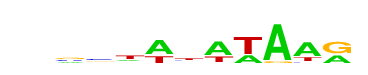

| p-value: | 1e-47 |
| log p-value: | -1.094e+02 |
| Information Content per bp: | 1.876 |
| Number of Target Sequences with motif | 70.0 |
| Percentage of Target Sequences with motif | 4.24% |
| Number of Background Sequences with motif | 176.7 |
| Percentage of Background Sequences with motif | 0.38% |
| Average Position of motif in Targets | 27.8 +/- 15.1bp |
| Average Position of motif in Background | 51.1 +/- 29.7bp |
| Strand Bias (log2 ratio + to - strand density) | 3.7 |
| Multiplicity (# of sites on avg that occur together) | 1.00 |
| Motif File: | file (matrix) reverse opposite |
| Rank | Match Score | Redundant Motif | P-value | log P-value | % of Targets | % of Background | Motif file |
| 1 | 0.970 | 1e-43 | -100.323339 | 2.97% | 0.16% | motif file (matrix) | |
| 2 | 0.697 |  | 1e-33 | -77.502177 | 4.36% | 0.68% | motif file (matrix) |
| 3 | 0.803 | 1e-32 | -74.536047 | 13.45% | 5.56% | motif file (matrix) | |
| 4 | 0.789 | 1e-27 | -63.076193 | 2.97% | 0.37% | motif file (matrix) | |
| 5 | 0.757 | 1e-27 | -62.504438 | 12.17% | 5.23% | motif file (matrix) | |
| 6 | 0.715 | 1e-23 | -54.256805 | 0.67% | 0.00% | motif file (matrix) | |
| 7 | 0.726 | 1e-21 | -49.024618 | 4.72% | 1.27% | motif file (matrix) | |
| 8 | 0.643 | 1e-20 | -46.664594 | 0.67% | 0.01% | motif file (matrix) | |
| 9 | 0.664 | 1e-11 | -26.325373 | 1.88% | 0.40% | motif file (matrix) |